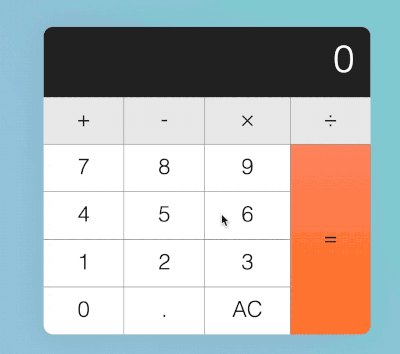

Resume
Summary
Computer Information Systems student at IIT with a broad interest in computing, spanning software development, cybersecurity, data analytics, and IT infrastructure. Continuously learning and refining my skills, whether through coursework, personal projects, or hands-on experience.
Skills
Programming Languages: HTML & CSS, Python, Java
Other: MS Office Suite, Google Workspace, Game Design, Adobe, VS Code, Figma, Canva
Languages: English
Work Experience
Web Developer : Google
- Created a Google webpage seen by thousands daily.
- Viewership increased by 50% over 3 months.
- Optimized front-end performance, reducing page load time by 40%.
Photographer : Adobe
- Led high-end photography projects for Adobe Stock, capturing visually compelling images seen by millions worldwide.
- Collaborated with design and marketing teams to showcase high-quality pictures.
- Conducted in-depth photo editing and post-processing using Adobe Lightroom and Photoshop.
Part-Time Cashier : Walmart
- Provided fast and friendly checkout service.
- Handled customer inquiries and complaints.
- Maintained a clean and organized checkout area.
Project Experience
Calculator
- Used HTML & CSS to design a calculator project.
- Implemented JavaScript to complete a responsive design.